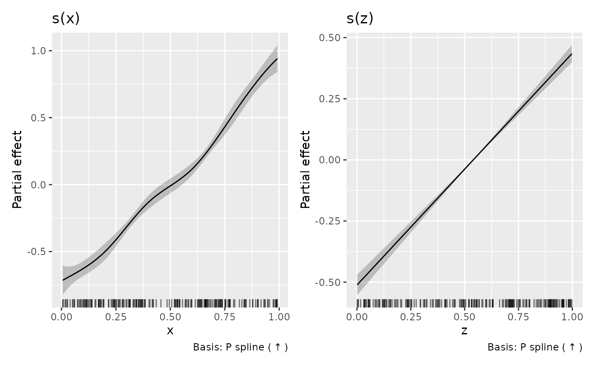
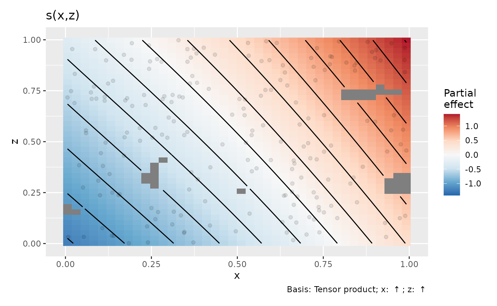
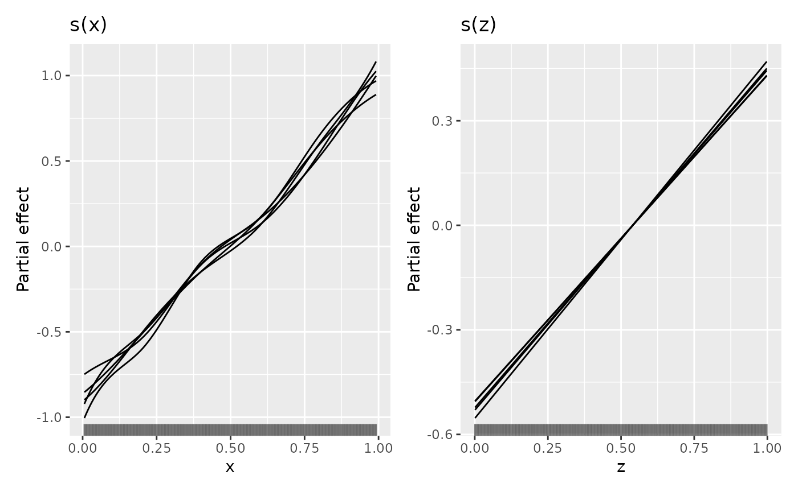
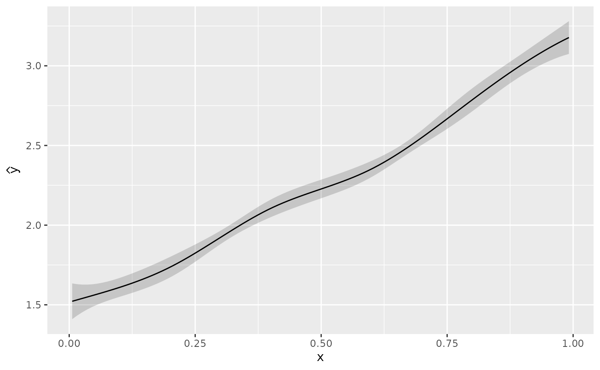
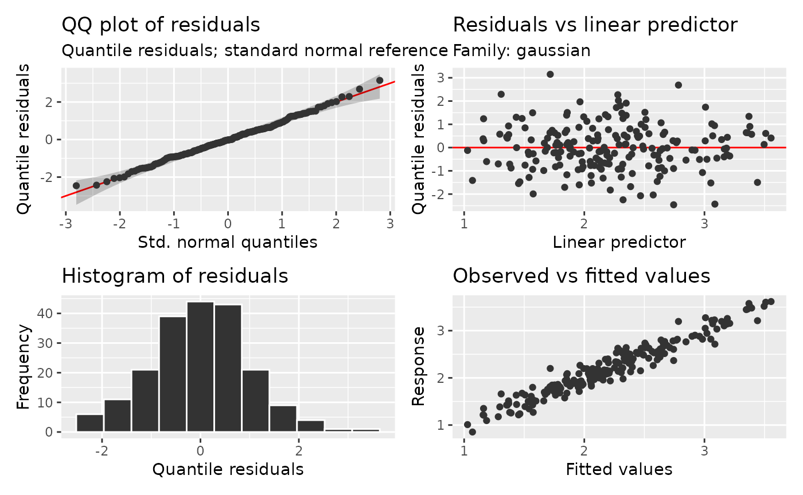

This article shows how to plot smooths fitted with {scam}, extract
estimates and intervals, sample fitted functions, and check predictions.
We use increasing effects of two covariates to illustrate these
operations. {gratia} also supports scam’s other one- and two-dimensional
shape-constrained smooths and ordinary {mgcv} smooths fitted through
scam().
We load gratia and scam before simulating the example.
The response below combines an increasing curved effect of
x and a linear effect of z, with independent
Gaussian noise of standard deviation 0.15. The covariates are
independently sampled on the unit interval.
set.seed(46)
d <- data.frame(x = runif(200), z = runif(200))
d$y <- exp(d$x) + d$z + rnorm(nrow(d), sd = 0.15)We fit increasing smooths for both covariates and plot their estimated contributions.

Plot smooth contributions
The captions identify the spline basis and its shape constraints.
Arrows indicate increasing or decreasing effects. For a tensor product
smooth, the caption identifies the constraint on each covariate. For the
local constraints bs = "lmpi" and bs = "lipl",
it shows the change point you specified as xc in
xt. The same captions appear when drawing estimates saved
with smooth_estimates(). Use smooth_type() or
the .type column of the saved estimates to get a short
label such as P spline (inc).
By default, draw() uses the fitted smooth’s centring, so
the plotted value at a given location stays the same if you change the
evaluation grid. For bivariate smooths, scam subtracts the average
across the plotted grid. Use centre = "plot" to match that
convention in draw() or assemble(). gratia
computes the standard errors after applying the same centring. The
following example fits a surface that increases with both covariates and
centres it on the plotted grid.
b <- scam(y ~ s(x, z, bs = "tedmi", k = c(5, 5)), data = d,
not.exp = TRUE)
draw(b, centre = "plot", n_2d = 40)
For univariate smooths, scam uses two standard errors for its default
limits. gratia uses qnorm(0.975) for 95% normal limits. The
packages can also calculate different standard errors for the same
curve. gratia uses the derivative of the plotted function with respect
to the fitted coefficients to calculate how their uncertainty affects
the curve.
Estimate intervals, derivatives and sampled functions
For intervals and derivatives, gratia uses the covariance of the
coefficients after scam applies its shape constraints. The intervals use
local normal approximations, with the smoothing parameters held at their
fitted values. frequentist = TRUE selects the frequentist
covariance. Use overall_uncertainty = FALSE to leave out
the intercept’s uncertainty. First extract pointwise smooth intervals,
estimate the slope of the x smooth, and request a
simultaneous band for that smooth. A simultaneous band describes
uncertainty over the evaluated curve, whereas the pointwise limits apply
to each location separately.
e <- smooth_estimates(m, overall_uncertainty = FALSE)
e <- add_confint(e)
head(e)
#> # A tibble: 6 × 9
#> .smooth .type .by .estimate .se x z .lower_ci .upper_ci
#> <chr> <chr> <chr> <dbl> <dbl> <dbl> <dbl> <dbl> <dbl>
#> 1 s(x) P spline (in… NA -0.714 0.0561 0.00591 NA -0.824 -0.604
#> 2 s(x) P spline (in… NA -0.705 0.0490 0.0159 NA -0.801 -0.609
#> 3 s(x) P spline (in… NA -0.696 0.0431 0.0258 NA -0.781 -0.612
#> 4 s(x) P spline (in… NA -0.687 0.0383 0.0358 NA -0.762 -0.612
#> 5 s(x) P spline (in… NA -0.678 0.0346 0.0457 NA -0.746 -0.611
#> 6 s(x) P spline (in… NA -0.669 0.0318 0.0557 NA -0.732 -0.607
derivatives(m, select = "s(x)")
#> # A tibble: 100 × 9
#> .smooth .by .fs .derivative .se .crit .lower_ci .upper_ci x
#> <chr> <chr> <chr> <dbl> <dbl> <dbl> <dbl> <dbl> <dbl>
#> 1 s(x) NA NA 0.901 0.963 1.96 -0.986 2.79 0.00591
#> 2 s(x) NA NA 0.895 0.865 1.96 -0.800 2.59 0.0159
#> 3 s(x) NA NA 0.893 0.774 1.96 -0.625 2.41 0.0258
#> 4 s(x) NA NA 0.895 0.692 1.96 -0.462 2.25 0.0358
#> 5 s(x) NA NA 0.902 0.619 1.96 -0.311 2.11 0.0457
#> 6 s(x) NA NA 0.914 0.553 1.96 -0.171 2.00 0.0557
#> 7 s(x) NA NA 0.930 0.496 1.96 -0.0434 1.90 0.0657
#> 8 s(x) NA NA 0.950 0.448 1.96 0.0730 1.83 0.0756
#> 9 s(x) NA NA 0.975 0.406 1.96 0.179 1.77 0.0856
#> 10 s(x) NA NA 1.01 0.372 1.96 0.276 1.73 0.0955
#> # ℹ 90 more rows
confint(m, parm = "s(x)", type = "simultaneous", seed = 53)
#> # A tibble: 100 × 9
#> .smooth .type .by x .estimate .se .crit .lower_ci .upper_ci
#> <chr> <chr> <chr> <dbl> <dbl> <dbl> <dbl> <dbl> <dbl>
#> 1 s(x) P spline (i… NA 0.00591 -0.714 0.0561 2.85 -0.874 -0.554
#> 2 s(x) P spline (i… NA 0.0159 -0.705 0.0490 2.85 -0.845 -0.565
#> 3 s(x) P spline (i… NA 0.0258 -0.696 0.0431 2.85 -0.819 -0.573
#> 4 s(x) P spline (i… NA 0.0358 -0.687 0.0383 2.85 -0.796 -0.578
#> 5 s(x) P spline (i… NA 0.0457 -0.678 0.0346 2.85 -0.777 -0.580
#> 6 s(x) P spline (i… NA 0.0557 -0.669 0.0318 2.85 -0.760 -0.578
#> 7 s(x) P spline (i… NA 0.0657 -0.660 0.0300 2.85 -0.745 -0.575
#> 8 s(x) P spline (i… NA 0.0756 -0.651 0.0288 2.85 -0.733 -0.568
#> 9 s(x) P spline (i… NA 0.0856 -0.641 0.0283 2.85 -0.722 -0.560
#> 10 s(x) P spline (i… NA 0.0955 -0.631 0.0281 2.85 -0.712 -0.551
#> # ℹ 90 more rowsscam fits unconstrained parameters and transforms some of them to positive coefficients to enforce the smooth’s shape. Coefficient sampling draws from a normal approximation for those unconstrained parameters, then applies the same transformation. This preserves the shape constraints in every sampled curve. Because the transformation is nonlinear, the samples and the analytic intervals use different uncertainty approximations. In particular, the endpoints of an analytic interval need not satisfy the fitted shape constraint.
Use gaussian_draws() to obtain a matrix with one
coefficient vector per row. Check its dimensions to confirm the number
of draws and coefficients. smooth_samples() evaluates
sampled smooth curves directly. We produce five draws of each smooth and
plot them with draw() to see how the curves vary while
retaining the fitted shape constraints.
draws <- gaussian_draws(m, n_draws = 100, seed = 54)
dim(draws)
#> [1] 100 15
samples <- smooth_samples(m, n_draws = 5, seed = 55)
head(samples)
#> # A tibble: 6 × 9
#> .smooth .term .type .by .row .draw .value x z
#> <chr> <chr> <chr> <chr> <int> <int> <dbl> <dbl> <dbl>
#> 1 s(x) s(x) P spline (inc) NA 1 1 -1.00 0.00591 NA
#> 2 s(x) s(x) P spline (inc) NA 1 2 -0.853 0.00591 NA
#> 3 s(x) s(x) P spline (inc) NA 1 3 -0.749 0.00591 NA
#> 4 s(x) s(x) P spline (inc) NA 1 4 -0.922 0.00591 NA
#> 5 s(x) s(x) P spline (inc) NA 1 5 -0.898 0.00591 NA
#> 6 s(x) s(x) P spline (inc) NA 2 1 -0.985 0.0109 NA
draw(samples)
The .smooth column identifies the smooth,
.draw identifies the coefficient draw, and
.value gives the sampled function’s value at each covariate
value. Fitted, derivative and response sampling functions use the same
coefficient transformation. See smooth_samples() and
gaussian_draws() for the returned columns and options for
supplying your own coefficient draws.
Predictions and model checks
To predict the mean response as x varies, use
conditional_values(). It combines both smooths and the
intercept, holding z at the observed value closest to its
median. The bands show uncertainty in the mean response.
predictions <- conditional_values(m, condition = "x")
predictions
#> # A tibble: 100 × 8
#> .row x z .parameter .fitted .se .lower_ci .upper_ci
#> <int> <dbl> <dbl> <chr> <dbl> <dbl> <dbl> <dbl>
#> 1 1 0.00591 0.555 mean 1.52 0.0572 1.41 1.63
#> 2 2 0.0159 0.555 mean 1.53 0.0502 1.43 1.63
#> 3 3 0.0258 0.555 mean 1.54 0.0444 1.45 1.63
#> 4 4 0.0358 0.555 mean 1.55 0.0398 1.47 1.63
#> 5 5 0.0457 0.555 mean 1.56 0.0362 1.49 1.63
#> 6 6 0.0557 0.555 mean 1.57 0.0336 1.50 1.63
#> 7 7 0.0657 0.555 mean 1.58 0.0319 1.51 1.64
#> 8 8 0.0756 0.555 mean 1.59 0.0308 1.53 1.65
#> 9 9 0.0856 0.555 mean 1.59 0.0303 1.54 1.65
#> 10 10 0.0955 0.555 mean 1.60 0.0302 1.55 1.66
#> # ℹ 90 more rows
draw(predictions)
Use appraise() to check how the model describes the
observed responses. Here, quantile residuals compare each observation
with its fitted Gaussian distribution. Look for departures from the
reference line in the QQ plot and for changes in the spread of residuals
across the linear predictor.
appraise(m, type = "quantile", seed = 56)
The model diagnostics article explains how to interpret the panels and their reference bands.
Other GAM operations
Many gratia methods for GAMs also work with scam fits, including
smooth differences, response derivatives and concurvity. For custom
predictions, lp_matrix() and model.matrix()
return a model matrix whose columns match coef(m). When
predicting with new data, gratia reuses any constants estimated when
evaluating formula terms, such as means from scale(), and
evaluates offsets specified in the formula. Predictions at the original
observations also retain offsets supplied through the
offset argument.
For supported response families with independent observations,
leave-one-out cross-validation (LOO) and WAIC use the coefficient
sampling approximation described above. Smoothing parameters and other
fitted family parameters stay fixed. variance_comp()
reports the fitted response scale divided by each smoothing parameter.
These ratios describe the penalties on the coefficients before
transformation.
For Gaussian identity-link fits with AR1 dependence, response
simulation uses the fitted correlation and AR.start series
boundaries, including observation weights. Supply the original
observations so that the simulator can use their order and series
boundaries. For other families, scam’s working AR1 correction alone does
not define a joint response distribution. The likelihood methods for
independent observations require a fit without AR1 dependence.
For GCV and UBRE fits, the covariance needed to include smoothing
parameter uncertainty is unavailable. If you request
model_edf(type = "unconditional") for these fits, gratia
warns and returns the usual effective degrees of freedom. Confidence
limits for the penalty-based variance components and MH and INLA
coefficient sampling are unavailable for scam fits. To impose a
supported shape restriction on an interval for a scam smooth, supply
estimates and a grid directly to shape_intervals().